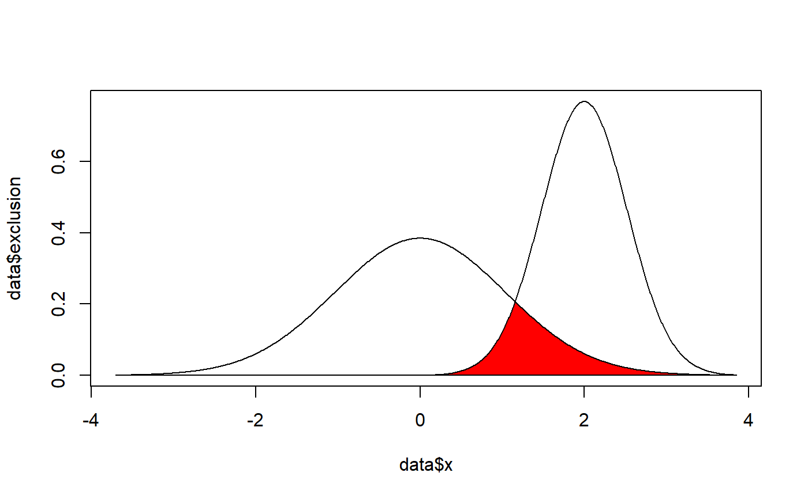

A method to calculate the overlap coefficient between two empirical distributions (that can be used as a measure of similarity between two samples).
overlap(x, y, method_density = "kernel", method_auc = "trapezoid", precision = 2^10, extend = TRUE, extend_scale = 0.1, ...)
| x | Vector of x values. |
|---|---|
| y | Vector of x values. |
| method_density | Density estimation method. See |
| method_auc | Area Under the Curve (AUC) estimation method. See |
| precision | Number of points of density data. See the |
| extend | Extend the range of the x axis by a factor of |
| extend_scale | Ratio of range by which to extend the x axis. A value of |
| ... | Currently not used. |
library(bayestestR) x <- distribution_normal(1000, 2, 0.5) y <- distribution_normal(1000, 0, 1) overlap(x, y)#> # Overlap #> #> 0.19